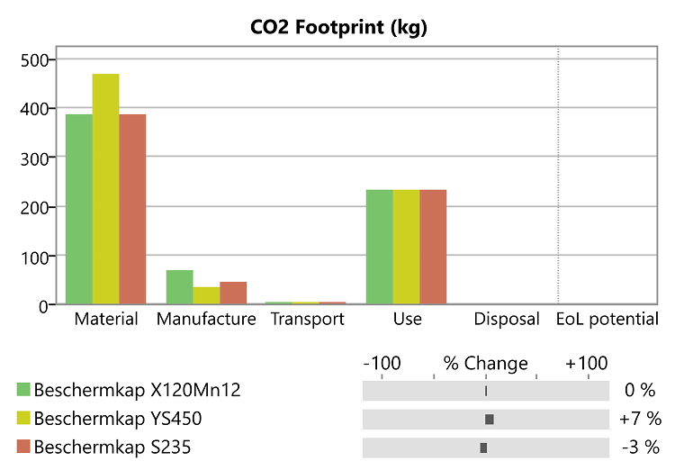
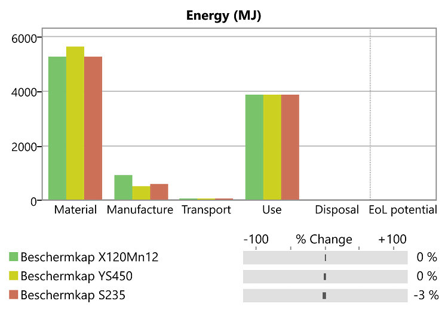

Sustainable manufacturing
Over het vak en de leerdoelen
welke snel inzicht geeft in de impact op maatschappij en milieu.
Met andere woorden, als smart professional overzie ik de effecten van de materiaalkeuze op de leefomgeving met betrekking tot grondstoffenschaarste, afvaloverschot en footprint.
Reflectie over "vuil goud"
Reflectie over "In the loop"
In “In the Loop” ben je een productproducerend bedrijf dat moet voldoen aan de eisen van de klant. Navigeren door grondstofmijnen en onvoorspelbare markten houdt in dat er economische, sociale, politieke en ecologische afwegingen worden gemaakt. Moeilijke strategische beslissingen moeten worden genomen: samenwerken met concurrenten, investeren in het delven van nieuwe materialen of het bedrijfsmodel veranderen?
“In the Loop” simuleerd de complexe, wereldwijde supply chain in minder dan 90 minuten. Naarmate de game zich vorderd, leren spelers over de levenscyclus van producten en over hulpbronnenefficiënte en effectieve oplossingen. Ook ze zullen klaar zijn om met hun eigen vindingrijke strategieën te komen.
“In the Loop” is een turn-based game. Spelers gooien dobbelstenen om over het bord te bewegen om zo materiaalfiches te verzamelen die nodig zijn om hun producten te maken. Gebeurteniskaarten komen tijdens het spel met tussenpozen voor en belemmeren of helpen de vaardigheden van spelers om materiële tokens te kunnen verkrijgen. Spelers kunnen ervoor kiezen om strategiekaarten te kopen om deze evenementen te bestrijden. De eerste speler die drie producten maakt, wint het spel.
Het spel heeft veel te maken met de echte wereld. Vooral nu in deze tijd van de Corona-crisis is goed merkbaar wat het kan betekenen als grondstoffen niet beschikbaar zijn. Het realistische aan het spel is, dat mocht er iets in de wereld gebeuren waardoor grondstoffen duurder worden of lastiger verkrijgbaar, de hele wereld hier last van kan hebben. Het wordt hierdoor lastiger producten te produceren. Als grondstoffen goedkoper worden is het juist makkelijker en goedkoper de producten te produceren.
Tijdens de duur van het spel heb je de mogelijkheid een grondstoffen te hergebruiken. Iedereen weet dat staal zich eenvoudig laat recyclen. Maar welke grondstoffen kunnen we allemaal herwinnen door ons afval of afgedankte producten te recyclen? Welke mogelijkheden dit bied is ook zeer interessant. Echter heeft dit niet veel te maken met mijn huidige werkgever. Als toeleverancier van plaatwerkproducten uit staal, aluminium en rvs weten we wat er gebeurt met ons afval. Het materiaal dat we verwerken wordt voorgeschreven door onze klanten. Wat voor mijn bedrijf van groot belang is, is de verkrijgbaarheid van materialen. In de huidige tijd van de Corona-crisis wordt snel duidelijk dat zelfs het standaard materiaal minder goed verkrijgbaar is en dat diverse andere bedrijven gaan hamsteren in materialen.
Het spel heeft op een aantal vlakken te maken met Smart Industry. Door magazijnen digitaal met elkaar te koppelen en zo voorraad niveaus kunnen inzien, is er te allen tijde een goed beeld van de verkrijgbaarheid van materialen. Zo is hamstergedrag niet noodzakelijk en kan er eerder worden ingespeeld op tekorten in de keten. Het beschikbaar hebben van materiaaleigenschappen in een database, helpt ons zoeken naar vervangende materialen bij een tekort. Door deze database is het ook mogelijk een ecologische vervanger te zoeken voor een materiaal.
Een bedrijf heeft als doel haar winst te maximaliseren. Echter is dit niet altijd mogelijk. Door gebeurtenissen in de wereld die economische gevolgen hebben, is het hebben van werk met een kleine marge belangrijker dan de winst te maximaliseren. Waar wel rekening mee moet worden gehouden is dat er geen verlies wordt gemaakt op een product. Zo moet er ook gekeken worden naar materialen die herbruikbaar zijn. In het geval van het bedrijf waar ik zelf werkzaam ben is dit heel duidelijk. Staal, aluminium en rvs zijn uitstekend te recyclen. Zo maken we gebruik van houten pallets, veelal euro-pallets, die goed herbruikbaar zijn. Dit scheelt aanzienlijk in de kosten en in het afval die wegwerppallets met zich meebrengen. Het doel is zo min mogelijk restafval over te houden en daar waar mogelijk verpakkingsmaterialen te hergebruiken. Door te kijken over een langere termijn kan de grootste winst behaald worden in het duurzaam produceren van materialen en producten. Geen eenmalige acties die op dat moment helpen maar veranderingen doorvoeren die blijvend zijn en helpen aan een duurzamere wereld.
Critical materials worden in het bedrijf waar ik werkzaam ben niet verwerkt. Dit zijn grondstoffen die door de Europese Commissie op een lijst zijn gezet omdat ze schaars zijn en van groot belang voor de Europese economie. Ze vormen een sterke industriële basis en produceren een breed scala aan goederen en toepassingen die worden gebruikt in het dagelijks leven en moderne technologieën.
Reflectie over paragraaf 2 van reader 7769
LCA rapport
Als opdracht moest er gekeken worden naar een product binnen het bedrijf en hiervoor een alternatief materiaal zoeken. Voor een klant die geldautomaten produceerd, verwerken wij materiaal waaruit beschermkappen worden geproduceerd. Hiervoor word X120Mn12 aangeleverd, ook wel mangaanstaal genoemd. Als dit verwerkt word zijn de dampen die vrijkomen bij het lasersnijden zeer giftig en de stof die op het oppervlakte zit, is ook schadelijk voor de mens en het milieu. De klant heeft voor dit materiaal gekozen omdat het een zeer hoge weerstand tegen slijtage heeft en kogelwerend genoemd word.


Een materiaal vinden met dezelfde eigenschappen of zelf hoger is niet eenvoudig. Door gebruik te maken van CES Edupack kan er worden gekeken naar een vervangend materiaal. Er is gekozen om een vergelijking te maken tussen het origineel uit X120Mn12, YS450 en S235JR, waarbij de laatste niet de materiaaleigenschappen heeft die door de klant gevraagd worden. Er vanuit gaande dat het ontwerp geheel hetzelfde blijft en hierdoor het gewicht van het gebruikte materiaal ook gelijk blijft zijn de volgende rapporten opgemaakt:
Mocht er gekozen kunnen worden voor het materiaal YS450, dan kan wellicht het ontwerp nog aangepast worden, waardoor er minder materiaal gebruikt hoeft te worden. Hierover zou dan met de klant uitvoerig over gesproken dienen te worden.